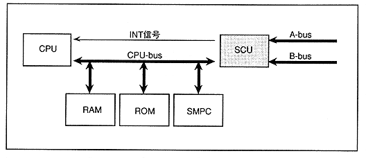

The CPU-bus is connected to the SMPC and controls the system reset signal and control pad.
∙ A-bus is connected to devices that supply programs such as cartridges and CDs.
∙ The SCU interrupt controller controls interrupts from A-bus, B-bus, and SMPC. Timer interrupts are supported, and interrupts (INT signals) can be generated in synchronization with the screen display (Figure 3.1).
Figure 3.1 SCU system configuration
